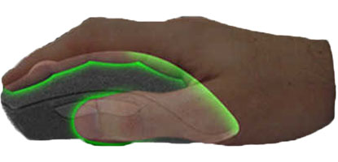

AGARRE DE PALMA
El agarre tipo palma es el que menos perjudica nuestra muñeca. En el agarre tipo palm grip el peso de nuestra mano recae sobre el ratón al apoyar la práctica totalidad de la palma en su superficie, así como los dedos que apoyan sobre los botones. Por eso, es más agradecido a la hora de jugar durante largas horas, y somete a un menor estrés nuestras articulaciones. En este agarre de palma, el movimiento lo lleva a cabo básicamente el brazo y, en menor medida, la muñeca. Esto hace que generalmente no sea el tipo de agarre que nos ofrece una mayor precisión, más bien al contrario. Al proceder los movimientos del brazo, son menos precisos.
